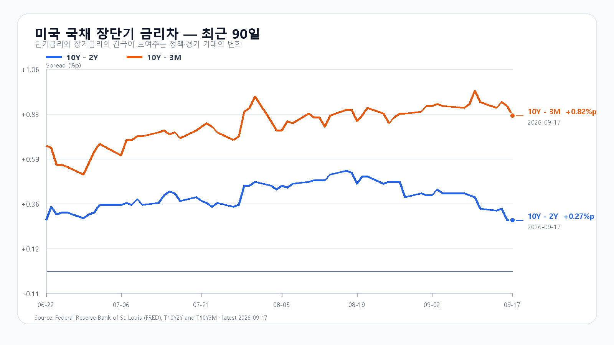

유가와 미국 국채금리가 함께 내리자 뉴욕 반도체주가 크게 반등했다. 엔비디아와 마이크론이 오른 흐름은 국내 메모리주에도 힘을 보탤 수 있다. 다만 전날 KOSPI는 외국인 매도에 장중 6,795선에서 6,715.41로 밀렸다. 오늘은 미국의 반등보다 국내에서 그 상승을 받아 줄 매수세가 이어지는지가 중요하다.
9월 17일 미국 정규장에서 SOXX는 3.39%, SMH는 2.76% 올랐다. 마이크론은 5.50%, AMD는 6.36%, 엔비디아는 2.54%, 브로드컴은 2.29% 상승했다. 나스닥 종합지수도 1.7% 뛰었다. 하루 전 연준의 금리 인상으로 무거워졌던 반도체 투자심리가 되살아난 셈이다. 미국 반도체 시세 · 미국 증시 마감
반등의 배경에는 유가와 금리의 하락이 있다. 브렌트유는 17일 배럴당 104.82달러에 마감해 약 1% 내렸다. 사우디 원유 수송 차질이 완화될 수 있다는 기대가 공급 불안을 낮췄다. 미국 10년물 국채금리도 5.01%에서 4.94%로 내려왔다. 하지만 유가는 여전히 100달러를 넘고, 연준의 추가 긴축 전망도 남아 있다. 오늘 아침 미국 주가지수 선물이 약세로 돌아선 이유를 함께 봐야 한다. 유가와 시장 · 미 재무부 금리
한국장에는 전날의 수급이 남았다. 17일 KOSPI는 6,779.02로 출발해 6,795.53까지 올랐으나 6,715.41에 마감했다. 한국거래소와 넥스트레이드를 합친 외국인 순매도는 약 2조 4,606억원이었다. 지수의 6,700선은 지켰지만 오전 상승을 끝까지 유지하지 못했다. 전날의 반등과 매도는 이미 한국장에 반영된 움직임이므로 미국 주식의 뒤이은 상승을 모두 오늘의 새 상승 폭으로 더할 수 없다. 국내 마감과 수급
메모리 가격도 한 방향으로 움직이지 않았다. TrendForce의 17일 현물 평균에서 DDR5 16Gb는 0.73% 올랐고 DDR4 16Gb는 1.85% 내렸다. DDR4 8Gb는 0.78% 상승했다. 서버 메모리와 HBM을 향한 구조적 수요가 이어져도 품목별 현물 가격과 오늘 삼성전자·SK하이닉스 주가는 각각 다른 속도로 움직인다. 메모리 현물 가격 · DRAM 산업 동향
달러/원은 18일 새벽 하나은행 고시 기준 1,382원으로 전날보다 0.33% 높았다. 환율이 높은 채로 외국인 매도가 이어지면 미국 반도체 상승만으로 KOSPI 6,850 위에 안착하기 어렵다. 반대로 삼성전자와 SK하이닉스가 장전 상승을 정규장까지 지키고 외국인·프로그램 매수가 함께 돌아오면 반등의 폭이 넓어질 수 있다. 달러/원 고시
오늘 KOSPI의 기본 종가 범위는 6,650~6,850, 확률은 50%다. 6,850을 넘어서고 외국인 현물과 프로그램이 함께 순매수하면 강세 범위 6,850 초과~7,000을 본다. 확률은 30%다. 6,650이 무너지고 두 수급이 순매도라면 약세 범위 6,450~6,650 미만으로 내려간다. 확률은 20%다.
| 종가 시나리오 | 범위·확률 | 15시 20분 확인 조건 | 전환 신호 |
|---|---|---|---|
| 기본 | 6,650~6,850 · 50% | 6,650 이상 · 6,850 이하 · 외국인 매도 축소 | 범위 이탈 |
| 강세 | 6,850 초과~7,000 · 30% | 6,850 초과 · 외국인·프로그램 동반 순매수 | 6,850 아래 재진입 |
| 약세 | 6,450~6,650 미만 · 20% | 6,650 미만 · 외국인·프로그램 동반 순매도 | 6,650 회복 |
장중 고저 예상 범위는 6,350~7,050으로 둔다. 종가 범위와 장중 범위의 목표 신뢰수준은 각각 90%이며 과거 적중률을 뜻하지 않는다. 대응 점수는 공격 25, 관망 50, 방어 25다. KODEX 레버리지는 전일 저가 102,825원을 1차 지지, 종가 103,490원을 반등 기준, 고가 106,520원을 저항으로 본다. KODEX 레버리지
장전 가격
| 항목 | 가격·변화 | 출처 시각 |
|---|---|---|
| KOSPI 전일 종가 | 6,715.41 · -0.04% | 2026-09-17 정규장 종가 |
| KODEX 레버리지 전일 종가 | 103,490원 · -0.09% | 2026-09-17 정규장 종가 |
| 삼성전자 NXT | 261,000원 · 3.37% | 2026-09-18T08:13:16.785358+09:00 |
| SK하이닉스 NXT | 1,805,000원 · 3.44% | 2026-09-18T08:13:16.785372+09:00 |
| 달러/원 하나은행 고시 | 1,382.00원 · 0.33% | 2026-09-18T05:50:43+09:00 |
| Nasdaq100 선물 | 29,695.25 · -0.16% | 2026-09-18T08:03:08+09:00 · 지연 시세 |
| S&P500 선물 | 7,700.00 · -0.09% | 2026-09-18T08:03:09+09:00 · 지연 시세 |
| 브렌트 선물 | 104.08 · -0.71% | 2026-09-18T07:58:30+09:00 · 지연 시세 |
| WTI 선물 | 101.15 · -0.75% | 2026-09-18T08:03:07+09:00 · 지연 시세 |
NXT · 환율 · Nasdaq100 선물 · S&P500 선물
NXT는 대체거래소 장전 거래, 미국 선물은 지연 시세다.
